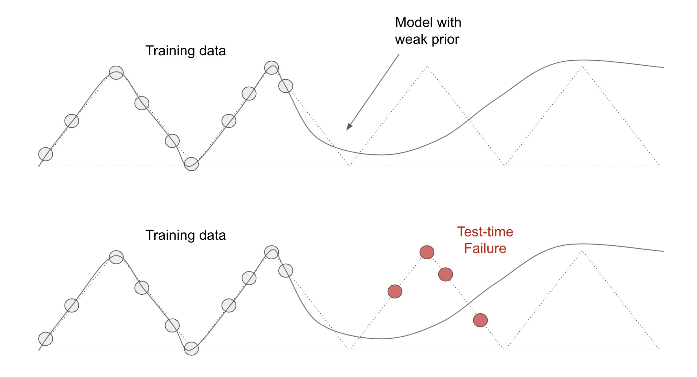
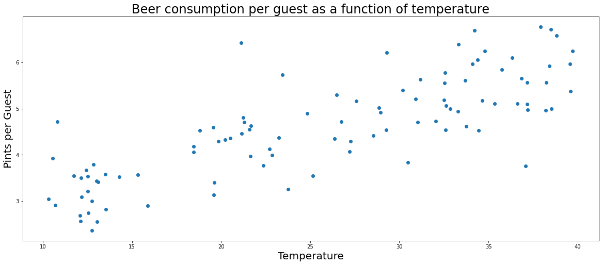
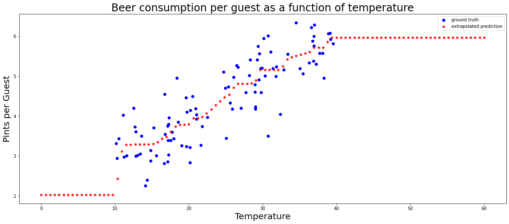
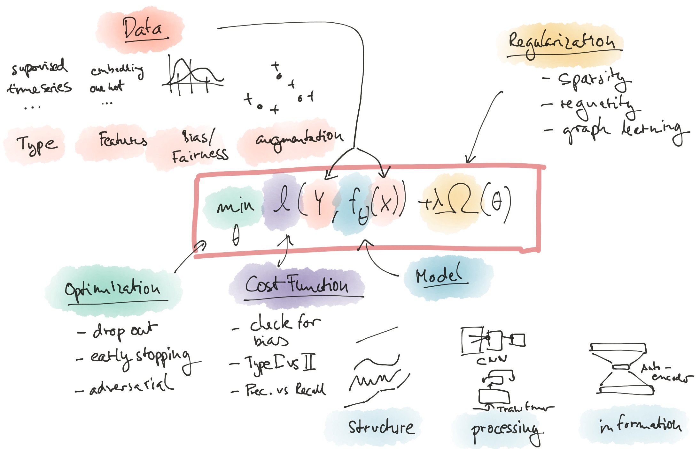

# How to teach our world knowledge to a neural network? Workshop at ODSC Europe, London 2022, https://odsc.com/europe/ Oliver Zeigermann Slides: https://bit.ly/2022-odsc-priors
### Where did the Smurf go? <video src="img/smurf/smurf-short.mp4" controls>
## This isn't so much about whether this is a great trick, but rather... * **object permanence** https://en.wikipedia.org/wiki/Object_permanence * is a knowledge about the world we are so certain of * we get stressed when it is challenged * and immediately start thinking: where did it go? * basis for a large number of magical tricks
### World knowledge * humans have a basic understanding of the world * be it about the physics of normal objects or about the properties of people * we also expect this from an intelligent automatic system * if a system does not fulfill this we are disappointed and our trust in the system decreases
## Modeling choices encode strong assumptions about the data <img src="img/world-knowledge/fchollet-model-priors.png"> https://twitter.com/fchollet/status/1439799099176357894
## Priors <div class="container"> <div class="col">  </div> <div class="col"> <img src="img/world-knowledge/strong-prior.jpeg"> </div> </div> https://twitter.com/fchollet/status/1450871559803916290
## What is the true model for that data? 
## This? 3 layers, 1500 nodes each, relu acitvation
## Or that? single linear neuron
## Both models have issues * linear model is very general, very good at extrapolation, but ... * also not very good at interpolation (underfits) * Can we have both, please?
### Lattice based models * lattices are functions that interpolate between a points on a (high-dim) regular grid * encode domain knowledge like monotonicity, convexity, feature relationships * avoid unexpected model behavior on data out of training distribution https://www.tensorflow.org/lattice <br> https://blog.tensorflow.org/2020/02/tensorflow-lattice-flexible-controlled-and-interpretable-ML.html <br> https://github.com/tensorflow/lattice
## Hands-On: Regression using Lattices  https://colab.research.google.com/github/DJCordhose/ml-resources/blob/main/notebooks/priors/extrapolate_lattice_beer.ipynb?hl=en
## What else is there?
### In a nutshell: Encoding World Knowledge What objective do you phrase in your learning experiment? - _type of learning_ - supervised learning, unsupervised learning, reinforcement learning - _input and output_ - feature extraction / preprocessing: what is really relevant? - _general architecture_ - type of model, network capacity, parametric - _reward and observation for RL_ - shape learning objective
## The High-Level View  Courtesy of Mikio Braun https://twitter.com/mikiobraun
## Thanks for attending # How to teach our world knowledge to a neural network Slides: https://bit.ly/2022-odsc-priors Blog-Post: https://opendatascience.com/how-to-bring-our-world-knowledge-to-machine-learning/ ### Stay in Contact if you like Oliver Zeigermann, <a href='https://twitter.com/DJCordhose'>@DJCordhose</a> https://www.linkedin.com/in/oliver-zeigermann-34989773/